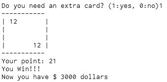

***********************************************************************
PROJECT BLACKJACK is a python-based blackjack game that uses simple functions we already learned in this class.
It is run off of a 'while' loop, and includes several if-statements along with a random card number generator.
Creating this game was no simple feat. It still doesn't work completely, something
that I attribute to user error if anyone were to ask. The hardest part of this project was the implementation
of 'break' and doing what I could to make sure the game ended when it was supposed to (dealer busts, you bust, you decide to stay, etc.).
This game was a learning experience in both coding and patience.
*******************************************************************

What we have here is the first part of the game. The player is given
1000 dollars to start with, and before you can do anything, the game prompts
you to enter how much you want to bet. The game then takes your answer, and
depending on whether you win or lose, it gives or takes away money. Once you
enter the money you want to bet, the game deals you two cards that are randomly
selected and a prompt pops up asking if you would like another card.

This is what happens after you ask for another card. It deals you one more and if
you get a 21, then the game recognizes that you won and it pays you. But if you didn't win,
then the dealer deals himself two cards. If he has less than 17 total, then he keeps adding
cards until he reaches 17, even if he busts, just like in real blackjack.

Here is the piece of code I had the most trouble getting to work. I spent several
days trying to figure out why the game wouldn't end sometimes when the dealer busted,
or if the player busted. The code essentially says that if the dealer's two cards he
deals to himself are under 17, he's supposed to deal himself one card at a time until
he gets above 21. Then there is an if-elif-else that holds the requirements for
winning or losing. this code still doesn't work all the time and I can't figure out why.